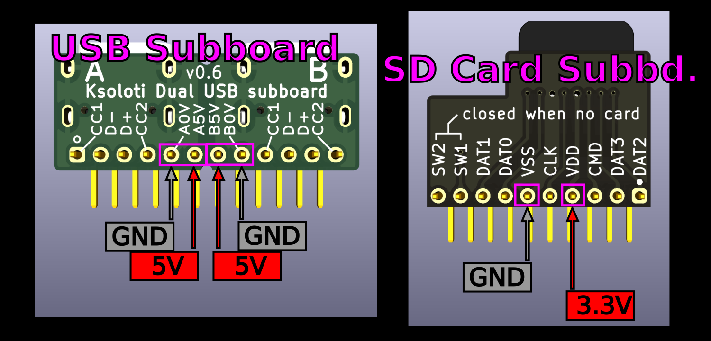

7.1. Big Genes Build Guide
+++ BREAKING NEWS: Big Genes PCB v0.6 PDM mic header bug! Clock and Data pins swapped by accident! +++
If you bought your Big Genes kit after Sept 10th, 2024, you likely have the v0.7 PCB where this bug is fixed. You can ignore this cyan text and scroll on. This bug only exists on Big Genes PCB v0.6. Also this bug is only relevant to you if you plan to install (or have installed) the optional PDM mic breakout (not included in the official kit).
If you have not installed the PDM breakout yet, you'll have to leave out two pins; If you have already installed it, you will have to clip those two pins. In both cases you will have to solder two additional wires. Here is the working fix: Ksoloti Core - Page 21 - MOD WIGGLER
First, check out this 3D model of a fully assembled Big Genes. In the sidebar on the left you can highlight parts and show/hide them.
-
Solder the required pin headers to the Ksoloti Core if you haven't done so.
- Three 2x12-pin headers, called H1, H2, and H3, forming an upside-down U shape.
- The 1x2-pin header up north, next to H2. It carries an additional SD card signal. Only one pin is actually electrically connected, but we use a 2-pin header for stability.
- The other 1x2-pin header, located west below H1, is optional: you only need it if you plan on installing a PDM microphone breakout.
- The 1x6-pin header in the southwest carries the audio input and output signals.
- 2x12-pin header, 2.54mm *3
- 1x2-pin header, 2.54mm *1
- 1x2-pin header, 2.54mm (optional, for PDM mic) *1
- 1x6-pin header, 2.54mm *1 -
Push the Big Genes pin sockets onto the corresponding headers on the Core, then insert them in the Big Genes PCB and solder. This will guarantee alignment. Do not place the 1x6-pin socket yet - the 3.5mm Thonkiconn jacks will be easier to solder while this socket is not installed.
- Three 2x12-pin sockets, called H1, H2, and H3, forming an upside-down U shape.
- The 1x2-pin socket up north, next to H2.
- The other 1x2-pin socket, located west below H1, is optional: you only need it if you plan on installing a PDM microphone breakout.
- While we're here, we solder the Eurorack power header as well. THIS IS A POLARIZED PART! Align the header so that the cutout in the plastic housing matches with the silkscreen diagram.
- Unplug and put the Ksoloti Core aside for now.
- 2x12-pin socket, 2.54mm *3
- 1x2-pin socket, 2.54mm *1
- 1x2-pin socket, 2.54mm (optional, for PDM mic) *1
- 2x5-pin shrouded IDC "Eurorack Power" header, 2.54mm *1 -
Now it is time to solder the front side components, from shortest to tallest.
- Two 10k (103) multiturn Trimmers. They are used to adjust the scaling of CV inputs X and Y.
- Six 50k (503) multiturn Trimmers. They are used to adjust the offset of CV inputs X and Y, as well as offset and scaling of CV outputs 1 and 2.
- On to the LEDs. Attach a spacer of the respective type to each LED. Simply thread the LED legs into the spacer until the LED body touches with the spacer. The 3-pin spacers have a cutout on one side so that the LED pins fit inside. Insert the LED in the PCB holes, pushing it down so the spacer stands flush on the PCB.
- Place and solder LED1 (green) up north and LED2 (red) just below it. LEDS ARE POLARIZED PARTS! The longer leg of the LED (the anode or "plus" side) goes into the hole marked with "+" on the silkscreen. - Place and solder LED3 and LED4. LEDS ARE POLARIZED PARTS! On LED3 and LED4, all three legs have different lengths. The center leg is the longest. The second-longest leg marks pin 1 (usually red color). The shortest leg marks pin 3 (usually green or blue color). There usually also is a pattern in the shape of the legs to indicate where pin 1 is. Follow the graphic pattern on the Big Genes PCB silkscreen. If you look at the three legs, one of the outer legs will have a square bulge near the LED body. This is pin 1. The other outer leg will have a more triangular bulge (pin 3). If your bicolor LEDs do not have this pattern, do not worry: insert the LED so that the second-longest leg goes in the square hole (where also the square graphic pattern on the PCB silkscreen is). - Confirm all LEDs are more or less at a right angle with the PCB. - While you still have easy access to LED 1 and 2, you may want to tape off their sides with some insulation tape to block off light bleed from one LED to the other. - Insulation tape against light bleed is not required for LED3 and LED4 unless you're light-sensitive and some ninimal bleed (through to the button holes) would bother you. - Lastly, solder the two tact switches right next to LED3 and LED4. The idea behind soldering the nearby LEDs before the switches is that you'll have some more finger space to align and press the LEDs in position. If you prefer to check alignment of the switches with the front panel, you can also solder them later, when it is time for the pots and Thonkiconn jacks.

- 10k multiturn trimmer (3266W-1-103) *2
- 50k multiturn trimmer (3266W-1-503) *6
- LED spacer, 2-pin, 4mm height, 4mm diameter *2
- LED spacer, 3-pin, 4mm height, 6mm diameter *2
- LED1: Green LED, 3mm *1
- LED2: Red LED, 3mm *1
- Some insulation tape (optional)
- LED3, LED4: Bicolor LED, 3mm *2
- 6x6mm tact switch with cap *2 -
If you want to add the optional LED gate indicators, you have to do it now. It will be impossible once the 3.5mm jacks in that area are installed. I usually use orange or red LEDs but you can use any color, really. Let me know which colors work well (red, orange, yellow, green...) and which ones are weak (I am guessing blue and white).
The gate indicator LEDs were added as an afterthought, to an area that does not have any space left for through-hole parts. They are a hack, really, but DIY is DIY, innit. You can solder 0805 SMD LEDs, which isn't optimal due to their distance to the front panel window. What I use are regular through-hole 3mm LEDs with their legs cut to size, like in the video below. Another option are SMD LEDs with a 2-pin header soldered to them as legs.
- It is a good idea to mark the anode or "plus" sides of the LEDs before you work on them. Strictly speaking it is not necessary as LEDs usually have one side of the body flattened to indicate the cathode or "minus" side, or you can re-check with a multimeter with a diode function - but the easier, the better.
- Cut the LED legs to the same length so that the entire LED is shorter than 10mm. No need to be exact here, anything between "barely solderable at this length" and "caliper says 9.99mm" is fine. We need to be able to fit the LEDs vertically between main PCB and front panel. You can compare with LEDs 1-4 (with their convenient standoffs), or temporarily place a 3.5mm Thonkiconn jack nearby to get the approximate height.
- Solder the two gate LEDs to the SMD pads. The plus marking from earlier must match the "+" on the PCB silkscreen. Try to get the LEDs centered between the jack markings on the PCB, so they don't get bent too far when you install the jacks around them later.
- While you still have easy access to the LEDs, you may want to tape off their sides with some insulation tape to block off light bleed from one LED to the other. You get the idea. Same thing like with LEDs 1 and 2.
- 3mm through-hole (or SMD) LED for gate indicator (optional) *2
- Some insulation tape (optional) -
It's subboard time! The two little subboards connect to the main PCB using 2.0mm pin headers. While these are smaller and more delicate than the standard 2.54mm, they are not too hard to solder if you are careful.
It became necessary to create these subboards because there are no suitable vertical parts out there that are both easy to solder and have the mechanical connections the Axoloti/Ksoloti hardware makes use of.
- Solder the 1x10-pin header to the SD card subboard like shown in the video.
- Solder the 1x12-pin header to the USB subboard like shown in the video.
- Place the two subboards in the headers on the PCB. Do do not solder them yet. We'll test-fit the front panel in the next step to make sure everything sits well.
- Ksoloti SD card subboard PCB *1
- 1x10-pin pin header, 2.0mm *1
- Ksoloti USB subboard PCB *1
- 1x12-pin pin header, 2.0mm *1 -
Now is a good time to double check the subboard pins for shorts.
- Measure the resistance between the pins. Pay special attention to the pins in the screenshot below. Ignore the "5V", "3.3V" here since we have not powered the board yet. Just check that there are no shorts or suspiciously low resistances between the pins. Note that on the USB subboard, there are two separate "5V and "GND" pairs, one for each of the two USB connectors. They are isolated from each other.
- On the USB header, resistance between pins 5-6 and 7-8, respectively, should be completely open, i.e. something like "OL" on the multimeter, or a few megaohms.
- On the SD card header, resistance between pins 4 and 6 should be at least a few kiloohms. I measure 10 kohms.

-
We are finally arriving at the bread-and-butter of the build. The meat of the module. The pots-and-jacks of the project.
- Place the 18 black Thonkiconn mono jacks in the bottom two rows. You may have to bend their long "antenna" legs closer to the body. Check with the footprints and you'll know what this means. Do not solder them yet.
- Place the 2 green Thonkiconn stereo jacks. You may have to bend their long "antenna" legs closer to the body. Check with the footprints and you'll know what this means. Do not solder them yet.
- Place pots 1-5 and 8. This way we create an upper frame for the front panel alignment. We don't place pots 6-7 and the two encoders yet so that we have space to comfortably fit the OLED later. Do not solder them yet. Newer kits supply B50k pots, which are recommended. Older kits had B10k pots, which should work fine too. However if you have B10k pots installed and they seem to be affecting each other (and/or CV values) when you turn them, check the Big Genes FAQ.
- Test-fit the front panel and make sure all jacks, pots, and the two subboards are aligned. Temporarily fix some of them using the supplied nuts to make soldering easier.
- Press front panel and PCB together and make sure the two subboards snap in and are flush inbetween. It may require some infamous wiggling to make them fit. Both subboards are 10mm tall, which is exactly the clearance between main PCB and front panel. It's a tight fit but you should be able to fit them in perfectly so that there is no major gap between the other placed parts and the front panel.
- Solder both subboard headers. The 2.0mm pitch shouldn't be too hard to solder, but take your time and make sure there are no bridged pins.
- Solder the 18 black jacks and 2 green jacks now. Some of the pins are uncomfortably close to each other. Some of the pins are uncomfortably close to the opamp ICs. It happens. You can't have everything in life. Take care not to burn any nearby components with your soldering iron. Give the solder joints a visual inspection as you go and make sure there are no bridged pins.
- Solder the 6 pots. It is good practice to only solder the three functional pins and leave the two big anchor pins unsoldered for now. This way you can still realign or desolder a pot in case it is off. Once all pots and jacks are well aligned, solder the pot anchor pins. You may have to increase the heat on your soldering iron to get these well soldered by the way, as with most other ground, or "GND" pins. GND consists of several continuous planes of copper which will act as a heat sink when you heat up pins connected to it.
- Thonkicon mono jack (black) *18
- Thonkicon stereo jack (green) *2
- Single-gang potentiometer, 9mm vertical, B10k to B50k *6
- Big Genes front panel *1
- (Nuts for pots and jacks as needed) -
Now is a good time to double-double check the subboard pins for shorts.
- Measure the resistance between the pins on the installed headers. Pay special attention to the pins in the screenshot below. Ignore the "5V", "3.3V" here since we have not powered the board yet. Just check that there are no shorts or suspiciously low resistances between the pins. Note that on the USB subboard, there are two separate "5V and "GND" pairs, one for each of the two USB connectors. They are isolated from each other.
- On the USB header, resistance between pins 5-6 and 7-8, respectively, should be completely open, i.e. something like "OL" on the multimeter. Since the subboard is now part of a bigger, complex main circuit, resistance could vary. But anything above a few kiloohms is fine.
- On the SD card header, resistance between pins 4 and 6 should be a kiloohm or higher. (This part of the circuit is just the regular 3.3V to GND rail so resistance will be lower - there is a lot of stuff connected between these rails now). The last time I measured I got 2.1k ohms with no Core connected. If the Core is plugged in, the resistance will be much lower: between 200 and 300 ohms. This is normal.
-
I can't seem to shake off the feeling that we forgot something important. Right! The line audio I/O socket. We should take care of it now, lest we finish our module then spend three days debugging it, wondering why there is no sound.
- Remove the front panel. We don't really need to do this now, but it seems good practice to keep it aside as much as possible to avoid scratches and solder burns. YMMV.
- Get the 1x6-pin socket. We'll need to do a pseudo-SMD hack here, because there is no space for another through-hole part on the Big Genes PCB. Bend the pins to a right angle, so that the two pins in the middle face one way, and the outer two + two pins face the other way. If this does not make much sense, the video below hopefully will.
- Push the socket on the respective header on the Ksoloti Core. Pay attention to the flashy arrows: the two middle pins must face north, the outer pins must face south.
- Connect the Core to the Big Genes main PCB. Solder the outer pins of the 1x6-pin socket.
- Remove the Core, solder the remaining two pins of the 1x6-pin socket.
- 1x6-pin socket, 2.54mm *1
- (Ksoloti Core from step 1) -
Assemble the OLED module.
- Your Big Genes kit may have come with a tiny blue board containing an EEPROM chip. This was a last-minute edit to have Big Genes stay consistent with other Ksoloti projects. In short, it means more memory, for free! (see note below). If this little board is not in your kit, it means the chip is included on the main PCB and you don't need to do anything in that regard. Free memory, with zero labour! - It is easiest to solder this board onto the OLED header so that it is fixed to the OLED board but floating between OLED and main PCB. Solder the EEPROM board pads to the header pins with little solder. Try to avoid making the pins too thick with solder to fit in the main PCB.Below is the official OLED installation procedure. If you did not get a "little blue board" in your kit, start from here. - Attach the four plastic standoffs to the OLED display using four M3 hex screws.- Place the OLED display in the PCB footprint. Make sure it is aligned flush and reasonably straight (meaning horizontally).
- Solder the four pins of its header to the PCB. The pre-soldered header on the OLED module might be a little too short, meaning the pins might not poke out through the holes in the Big Genes PCB. They don't have to - If you can solder them to make good contact, there's no problem. Use your judgement here - If it's hard to make a good connection from the bottom side of the Big Genes PCB, consider soldering the pins on the top side.- OLED module, 1.3 inch, 128x64 pixels, I2C (SH1106 controller), pinout: GND, VCC, SCL, SDA *1
- (Early kits: Ksoloti EEPROM retrofit PCB *1)
- M3 hex screw, 6mm length *4
- M3 standoff, plastic, 6mm height *4
- M3 hex nut, plastic *4 -
Place pots 6-7 and the two encoders. DO NOT SOLDER THEM YET.
- Fit the front panel, then wiggle infamously. You know the drill. There should be no need to attach nuts this time since the other parts lock in the position of the front panel.
- Solder.
- Single-gang potentiometer, 9mm vertical, B10k to B50k *2
- Encoder witch push switch (EC11) *2
- 1x2-pin header, 2.54mm (Core PCB) *1
- 1x2-pin socket, 2.54mm (Big Genes PCB) *1
- Adafruit PDM microphone breakout with 2.54mm header *1
Congratulations! Your Big Genes is hereby finished!
Also check out the Big Genes Official FAQ, a collection of things one should be aware of and questions worth mentioning.
Test All
There is a "test all" help patch which will give you an overview of all controls so you can test if everything is behaving as it should. From the Help menu, select Help Patches > ksoloti-objects > ksoloti > big genes > test all big genes (or similar) and take the patch live. Scroll up, watch the displays and check out the comments!
Calibrate CV Outputs
It is time to calibrate it now. There is a help patch that should make this task easier. From the Help menu, select Help Patches > ksoloti-objects > ksoloti > big genes > cv out big genes (or similar).
Take the patch live and follow the instructions in the comments. Ideally you'd use a multimeter or oscilloscope to measure the voltage, but you can also tune by ear using a sound generator that responds to 1V per octave.
Calibrate CV Inputs X and Y
There is another help patch that should make calibration of CV input X and Y easier. From the Help menu, select Help Patches > ksoloti-objects > ksoloti > big genes > cv in big genes (or similar) and follow the instructions. It is actually possible to calibrate the CV inputs using Big Genes' own CV outputs, though it has not been extensively tested so far (if after connecting external CV sources some re-calibration is required). Let me know how it works!
CV Input/Output Polarity Jumpers
You may have noticed the pads for the CV jumpers, JP1 to JP4. If a jumper is closed (i.e. the two pads are shorted together), the respective CV will operate from 0 to 10V (JPx closed) instead of -5V to 5V (JPx open, default). There are no parts for these jumpers included in the kit. To be honest, I doubt you want to solder headers there and flip the jumpers around a lot, as CV polarity is likely not a thing you'll change too frequently? But maybe that's just me. You will likely also have to recalibrate every time you change a CV jumper.
Long story short, if you want any of the below CV jacks to operate on 0 to 10V, close the corresponding jumper (with a short wire, or snipped-off component leg, etc.).
| Jumper | CV Jack |
|---|---|
| JP1 | CV Input X |
| JP2 | CV Input Y |
| JP3 | CV Output 1 |
| JP4 | CV Output 2 |
Now go ahead and patch some objects or check out the demo patches under File > Library > ksoloti-objects > demos. The idea is that users will add more demos in the future as Ksoloti matures. If you come up with something, feel free to share on Discord or the new Forum!
The ksoloti-objects library included in the Ksoloti Patcher has a set of dedicated objects for Big Genes under ksoloti/big genes (via the Object Finder). /pot p for example will read one of the eight pots and provide you with a unipolar value between 0 and 64. /pot b will do the same but will give you a bipolar value between -64 and +64. /button will read the state of one of the two buttons... and so on.